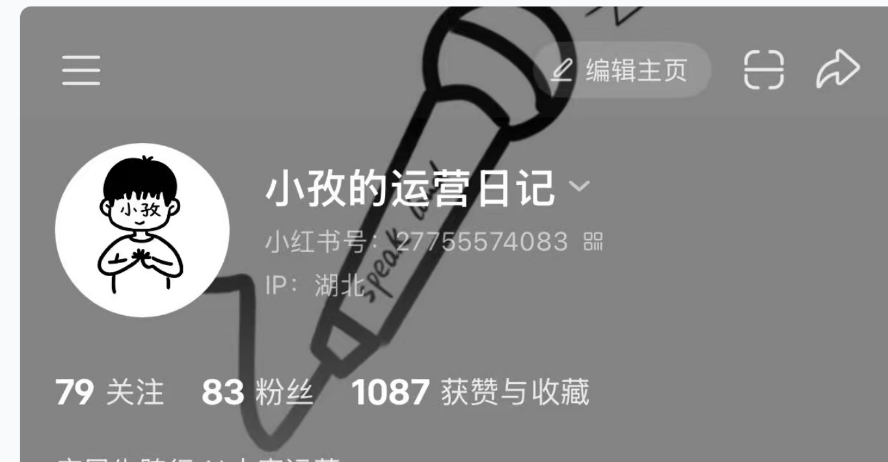
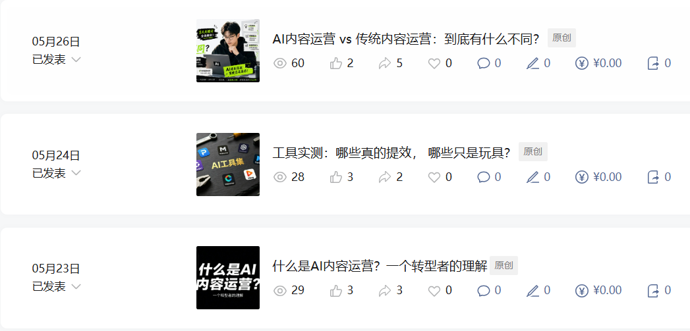

本科在4A广告公司做过活动运营，读研期间积累了扎实的写作能力，平时喜欢自媒体和摄影。用1个多月时间搭建了自己的内容账号矩阵，正在探索内容运营的更多可能。
本科在4A广告公司做活动运营，读研期间持续写作锻炼表达能力。喜欢自媒体和摄影，对内容运营有天然热情
累计产出公众号/新闻稿/短视频脚本等内容70+篇，擅长结合热点产出高传播性内容
熟练使用可灵、即梦、剪映等AI工具，可独立完成从文案策划到成片输出的全流程，效率提升40%
在项目中负责活动策划从0到1落地，统筹1200㎡沉浸式IP展，擅长需求拆解、流程搭建、数据复盘
具备Excel数据处理能力，擅长通过内容数据复盘优化运营策略
定位"帮文科生/应届生转行做内容运营"，记录真实的转行过程和求职数据

解决"内容运营到底是什么"的入门困惑，用真实面试经历帮读者建立认知。
HOW系列第一篇，拆解选题能力的核心方法论，包含真实面试场景还原。
探索AI工具在内容运营中的真实落地效果，分享转型者的第一手经验

使用AI工具独立完成从文案到成片的30秒广告
制作过程中使用即梦生成的画面示例，展示从创意到成片的完整链路。
从展会执行到内容传播，积累了从0到1的项目操盘经验
数据分析驱动决策：活动期间追踪用户来源数据，发现通过某类垂直领域KOL内容引流的用户，转化率是其他渠道的3倍。于是将70%的传播预算集中投放到该类型内容，并定制专属互动话术。
内容策略动态调整：前期预热内容以"展览亮点"为主，数据反馈显示"沉浸式体验"类内容完播率更高，迅速将内容重心转向"体验感"描述，预热期曝光量从单篇不足3000提升至1.2万+。
现场运营转化链路优化：通过分析用户动线，在展览出口设置"扫码购衍生品"环节，配合限时优惠，带动单日衍生品销售额突破3000元（较日常提升120%）。
结果：预热期总曝光12万+，用户满意度92%，验证了"内容质量+精准渠道+转化链路"的闭环有效性。
用内容连接用户和产品，通过持续生产、分发和优化，让用户找到想要的东西，也让产品找到需要它的人
每条内容的生命在于用户看到它之后的反应——点赞、评论、收藏、转化。我习惯用数据跟踪内容的"后半程"。
每天刷30分钟热点，每周建立10个选题的选题库，从评论区、热搜、同行爆款中提炼用户真正关心的话题。
用AI搭框架、写初稿、做素材，我负责判断逻辑、调整语气、把控调性。AI解决"量"，人解决"质"。
以vivo游戏中心小红书账号为例的优化思路